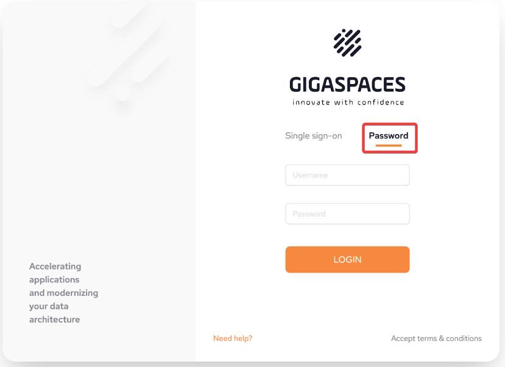
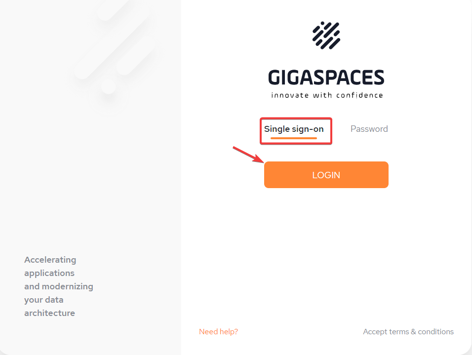
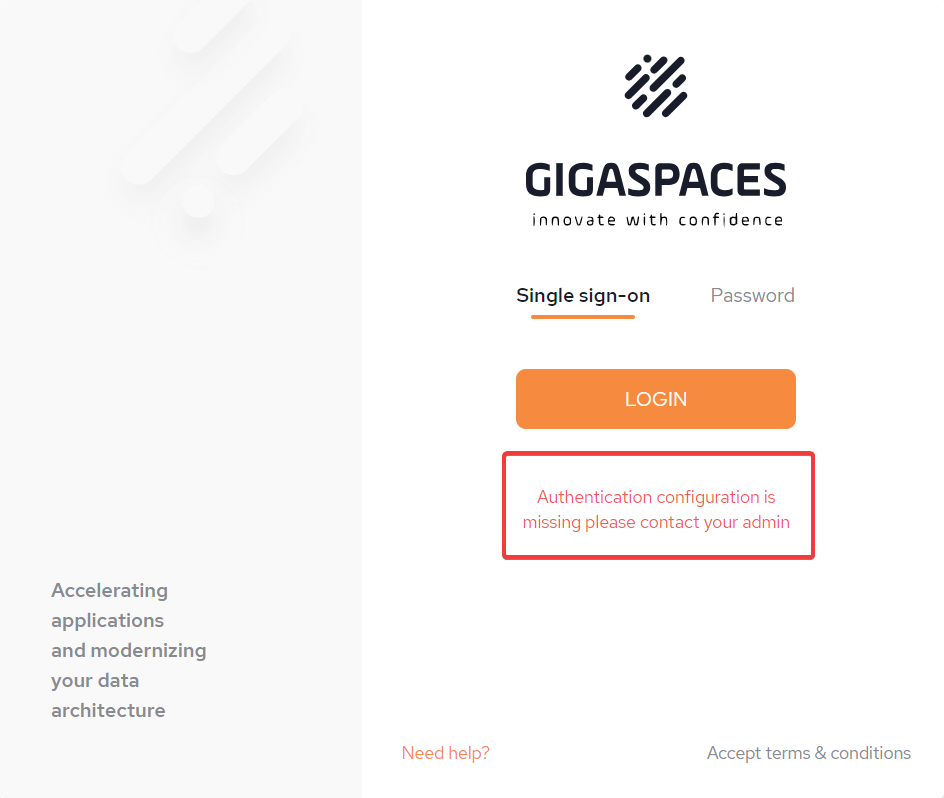
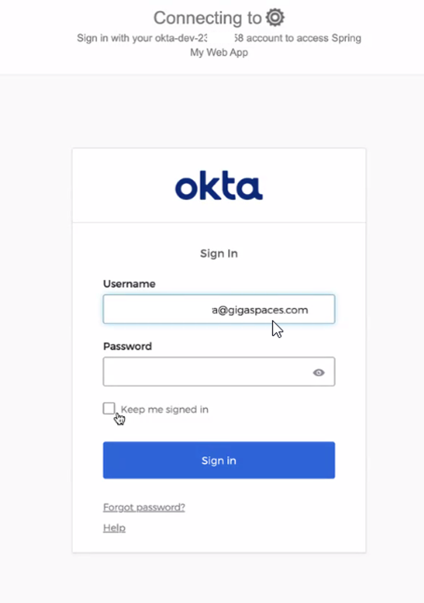

If the environmental variable AUTH=on, the login screen will display to begin using SpaceDeck.
See
The owner (superuser) of the system should initially login via the password option with details provided by
This step must be completed in order for the ROLE_ADMIN user to configure SSO (Single sign-on).
For an explanation about setting up your IDP to enable Secure SSO login refer to IDP Details
In order to bind the IDP that has been created, the root user has to login to SpaceDeck with the correct username/password and then populate all the Connection fields in the Administration/General Setup menu.
By default, the root user has root/password credentials. This must be changed before installation using the parameter of global.password seen in step 3 of the Instructions for Smart DIH Installation using Kubernetes.


Standard users enter their user credentials to login to SpaceDeck using SSO (Single Sign-On). Click Login
If SSO has not been configured, this will be displayed:

If SSO has been configured, then a single-sign on screen will be displayed (in our example this is through OKTA). Complete this procedure to access SpaceDeck.
